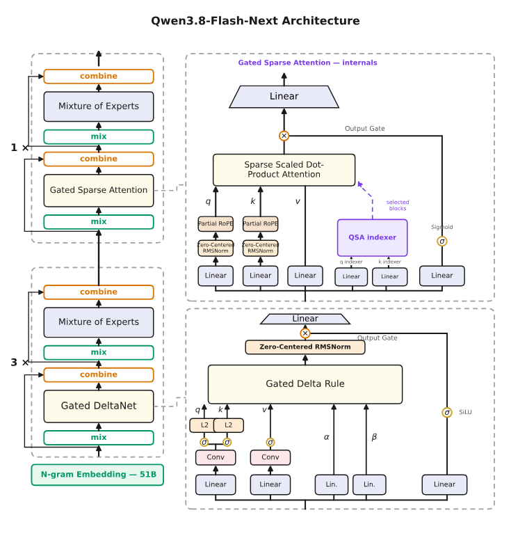
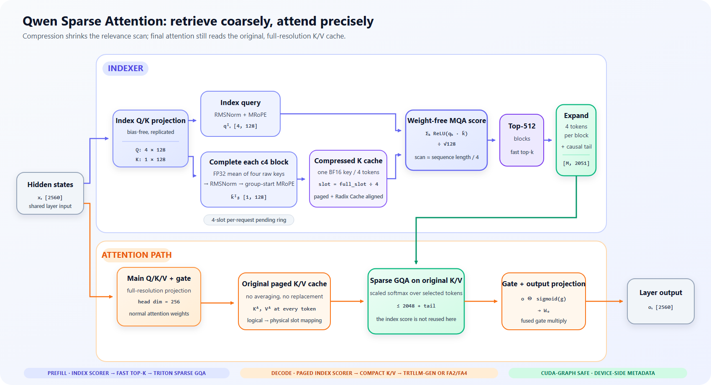
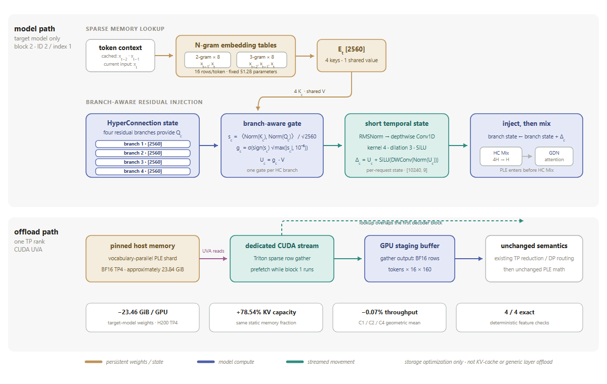

今天，Qwen团队开源了Qwen3.8-Flash-Next：一个多模态MoE模型，也是Qwen4架构的早期预览。它对Qwen4的角色，相当于Qwen3-Next之于Qwen3.5。Gated DeltaNet + Gated Attention混合设计从Qwen3.5一直用到Qwen3.8。SGLang与Qwen、NVIDIA、AMD团队合作，为模型提供day-0支持。
Qwen3.8-Flash-Next在多个方面升级了架构：GDN+QSA混合注意力（Gated DeltaNet高效压缩历史）、Gated Residual把残差流加宽到4分支、N-gram Embedding按局部上下文查找。本文按原文 ≥80% 编译LMSYS/SGLang这篇技术博客。
今天，Qwen团队开源了Qwen3.8-Flash-Next：一个多模态MoE模型，也是Qwen4架构的早期预览。它对Qwen4的角色，相当于Qwen3-Next之于Qwen3.5。Gated DeltaNet + Gated Attention混合设计从Qwen3.5一直用到Qwen3.8。与Qwen、NVIDIA、AMD团队合作，SGLang为模型提供day-0支持。

Qwen3.8-Flash-Next在几个方面升级了架构：
GDN + QSA混合注意力（GDN + QSA hybrid attention）：Gated DeltaNet（GDN）高效压缩历史，而Qwen Sparse Attention（QSA）用轻量indexer以微块粒度选择重要上下文，保持长序列注意力成本低。
Gated Residual（GR）：把残差流加宽到4分支，并用动态门控（dynamic gate）控制读写、强化跨层信息流。
N-gram Embedding：按局部上下文做查找，为常见短语和局部模式提供额外表示，以极少的额外计算扩展现成模型容量。
亮点（Highlights）：
混合架构：125B参数主模型，外加额外的51B N-gram Embedding，每token激活6B参数。共48层：36个GDN线性注意力层 + 12个QSA稀疏注意力层。MoE层用512个expert、top-10路由。
我们量化并发布的NVFP4 checkpoint：RadixArk/Qwen3.8-Flash-Next-NVFP4，day-0发布。
N-Gram Embedding：把N-gram embedding offload到host内存大幅降低GPU内存占用，异步预取与模型计算重叠、几乎零额外成本。
Gated Residual，由NVIDIA构建、经FlashInfer发布：通过低延迟单GEMM路径提供高性能Mix/Combine HyperConnection算子（2.05× 内核级加速）。
GDN+QSA：为GDN+QSA混合架构做KV cache内存管理，兼容Radix Cache。
Speculative Decoding：为MTP draft模型做index-reuse特性，长上下文下削减draft模型的indexer时间。在B200上TP4时，NVFP4 checkpoint在batch size 1 + MTP下解码540 tok/s，accept length 3.3（含bonus token）。
启动命令和各工作负载配置指导见SGLang Cookbook。
GDN+QSA混合架构（GDN+QSA Hybrid architecture）：遵循Qwen3.5引入的架构设计，Qwen3.8-Flash-Next采用GDN + Attention混合架构：每4层里，3层GDN把历史压缩进固定大小状态，剩下那层对完整上下文做精确检索。对全局Attention层，Qwen3.8-Flash-Next进一步引入Qwen稀疏注意力（QSA）：因为子列表长度增长时，计算和KV cache内存访问成本都大幅上升。稀疏注意力只关注重要上下文来降低长序列计算。QSA更进一步：把序列聚成微块、在块级估重要性、再选最相关区域，同时降低索引开销和注意力成本。
Gated Residual（GR）：结合两个思想：① 沿Hyper-Connection把残差流加宽成多条分支；② 把GatedNorm风格的元素级动态门控带进残差读。原始单一残差流被扩成4条并行分支，让模型能基于当前内容、动态决定从每条分支读多少信息、写回多少。
N-gram Embedding：用「当前token + 若干前序token」形成的局部上下文做查找，为常见短语和局部模式提供额外表示，同时几乎不加每token计算开销。N-gram Embedding可以完全驻留host内存以省GPU内存：查找位置提前算好、异步预取，因此永不永久占用GPU内存。最终模型在网络开头附近只用单个N-gram Embedding层，以相对低成本加入大规模「局部模式记忆」。
IndexShare MTP：draft-extend pass对target刚接受token算出的QSA top-k选择，在整个MTP iteration内被持有，因此每个draft decode步都跳过indexer、改读那份冻结选择加上自那以来draft的位置。长上下文下这大幅加速MTP draft步。
Qwen3.8-Flash-Next用压缩比4（c4）的compressed QSA。每个QSA层有两条路径：轻量indexer决定「往哪看」，稀疏GQA从原始注意力K/V cache读入选中的条目。

indexer投影四个128维查询头和一个共享key头。每四个原始index key在FP32里取平均、归一化、用首token的MRoPE位置旋转，合成一个压缩key。一个query对可见压缩块打分。
QSA保留最佳512块、把它们扩回2048个逻辑token位置，并追加当前不完整块里的0到3个token。最终稀疏注意力最多看到2051个位置。重要的是：压缩key只是索引：最终softmax和值聚合用原始的、未压缩K/V。
这意味着QSA用少量cache容量换取大幅更低的long-context计算和内存流量。indexer扫描约L/4个小key，然后稀疏注意力读约2K个完整K/V条目、而非全部L个。模型级KV节省来自混合布局（48层里只有12层存增长的注意力K/V，其余36层GDN层用固定大小状态），而非在QSA层内丢弃K/V。
SGLang只把indexer挂到全注意力层并复用它们的MRoPE实现。原始K/V留在正常的paged pool。QSA每四个token加一个BF16压缩index key；不完整块的原始key住在每请求四槽ring buffer。这避免为完整上下文保留原始index key，把QSA的index-cache开销降80%。页对齐的full_slot/4寻址让压缩cache跟随Radix Cache所有权、无需独立生命周期。
prefill用自定义GPU核算index分数、快速top-k选块、Triton扩展索引并跑稀疏GQA。decode用同打分器的paged版本、压缩选中原始K/V、派发到Blackwell上的TRTLLM-Gen或否则packed FlashAttention。indexer可在第二条CUDA流上叠加主Q/K/V投影，元数据路径CUDA-graph兼容。
QSA层跑indexer决定注意哪些token，再对正好那些token做稀疏注意力。第二阶段有固定token预算；第一阶段对全部 ⌈L/4⌉ 压缩块打分，所以超过几千token后，设定层成本的是indexer而非它喂的注意力。
Speculative decoding把它放大：--speculative-num-steps N时，一个MTP iteration花N次indexer调用（N-1个draft decode前向 + 1个draft-extend）来把draft最多推进N个位置。
所以draft decode步骤干脆停止跑indexer。每个MTP iteration以对target刚接受token的draft-extend开场，而那趟本来就会跑indexer；每请求最后一个被接受行在那里被捕获、供整个draft loop复用，查找时再补N+1个自捕获以来已draft的位置的额外列：所以draft仍看得到它自己进行中的token。选择是一列逻辑token索引、请求只增不减，绝不会越界；又因query最多移动N/ L个位置，复用的排序基本就是indexer会重算的那个，接受长度不变。
结果：每个MTP iteration的draft indexer工作量从N次调用降到1次。只用来喂它的那些小元数据核：包括压缩decode视图、pending-ring和group-ring布局：也一起从draft decode步骤里移除。
HyperConnection（HC）维护四条并行残差流，而Attention和MoE跑在单一隐藏状态上。因此每个块用Mix从四条流读取、用Combine把输出写回。这里M是一次调用处理的token数：decode和spec验证时小，prefill可到数千。按M派发到不同内核。
Mix：用低秩投影生成逐元素门控、把四条残差流减成单一隐藏状态。
M≤16时用FlashInfer PR #4266的低延迟split-K CuGEMM。split-K把K维分区、让多个CTA并行处理同一输出区，弥补有限的M维并行度。SiLU、Sigmoid、gating和最终归约熔进两个GEMM epilogue，避免中间写global memory。up-projection权重离线重排，使每输出的四个门值可在tile内局部归约。更大M用cuBLAS（这些shape下更高效）。
NVIDIA B300、M=4下，熔合路径把Mix延迟从12.36降到6.03µs：2.05× 内核级加速。对先前Triton路径的端到端spec-decode基准，吞吐提升7.6%。
Combine：算四个注入系数并给四条流做残差更新。大M时一个熔合核单趟处理每个token行。小M时这个映射暴露的CTA太少，所以M≤32路径把每行沿隐藏维拆分，两核实现提供足够并行度、同时保留参考FP32累加顺序和逐位一致的输出。
M=4时split路径把Combine延迟从4.17降到2.13µs：1.96× 内核级加速。对原先每行一CTA内核的独立端到端基准，吞吐提升5.49%。大M时熔合核比cuBLAS基线快达2.54×，达到6144 GB/s有效带宽。
Shape-aware派发让HC在低延迟decode和大规模prefill都用合适执行路径。
该模型把PLE：一个hash-addressed的可学习N-gram embedding内存：放在第二个decoder块（配置层ID 2，对应零基索引1）。它的512亿embedding参数（约95.4 GiB in BF16）是固定模型权重，而非KV cache或可变注意力内存。

对token x_t，八个2-gram hash头用 (x_{t-1}, x_t)，八个3-gram hash头用 (x_{t-2}, x_{t-1}, x_t)，产出16个embedding行ID。每行贡献160个值，拼接成shape [2560] 的E_t。
PLE在第二个decoder块：稀疏N-gram检索在HC Mix之前被门控进四条HC分支。SGLang把词表并行表分片移进pinned host内存、每token只gather那16个选中行。
第四行把门控值加上其短卷积（short-conv）输出来构成PLE delta；第五行把该delta注入HC状态。PLE保持两个请求局部状态：用于hash的两个最近token ID，和一个shape [10240, 9] 的短卷积历史。target模型在prefill、decode、target验证期间都保留PLE；只有单层MTP draft模型禁用它。
因为每个token只碰16行，SGLang把每个rank的word-vocab并行表分片放在pinned host内存，用一个Triton UVA核把选中行gather进小块BF16 GPU buffer。一条专用CUDA流把gather与第一个decoder块重叠。现有的TP归约和DP gather/scatter路径都保留：offload只改存储位置，不改表所有权或PLE数学。此CUDA路径在有效模型dtype为BF16时默认启用，且与KV-cache或通用层offload分开。
H200、TP4、MTP-213（2个draft步、top-k 1、每次target验证3个draft token）下，offload把target模型权重从83.91降到60.45 GiB/GPU（-23.46 GiB），在相同内存分数下把已分配KV容量从1.84M提到3.28M token（+78.54%）。
1、2、4个并发请求下匹配吞吐几乎不变（-0.07% 几何均值）。四个固定提示 ×128生成token的输出ID逐位一致；首例记录的chosen-token logprob轨迹也逐位一致。
本工作是SGLang团队（RadixArk）、Qwen、NVIDIA、AMD之间的合作。
SGLang Community：Qiaolin Yu, Yuhao Yang, Cheng Wan, Xinyuan Tong, Zijie Xia, Ke Bao, Mingyi Lu, Haoguang Cai, Banghua Zhu, Ying Sheng。
Qwen：Yi Zhang, Yizhong Cao, Guangda Liu。AMD：Andy Luo, Haichen Zhang。
NVIDIA：NVIDIA与SGLang联合优化了Qwen3.8-Flash-Next在Blackwell和Hopper上的性能。
参考：https://www.lmsys.org/blog/2026-08-26-qwen-flash-next